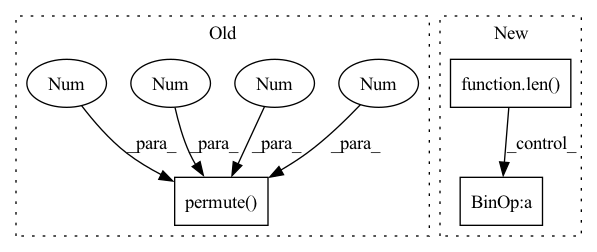

Pattern ID :3161
Before Change
for logits, codes in zip(allLogits, allTrues):
// rand = torch.randint_like(codes, logits.shape[-1])
// regLoss.append(self._auxLoss(logits.permute(0, 4, 1, 2, 3), rand))
mleLoss.append(self._auxLoss(logits.permute(0 , 4 , 1 , 2, 3 ) , codes))
// self._movingMean -= 0.9 * (self._movingMean - ssimLoss.mean())
// pLoss = self._pLoss(image, restored)After Change
innerProduct = codebook @ codebook.T
// orthogonal regularization
weakCodebookLoss.append(self._auxLoss(innerProduct, torch.eye(innerProduct.shape[0], device=innerProduct.device, dtype=innerProduct.dtype)))
m = len( features)
for i in range(m):
for j in range(i + 1, m):
// [n, h, w] := ([n, c, h, w] * [n, c, h, w]).sum(1)
interProduct = (features[i] * features[j]).sum(1)
// feature from different group should be orthogonal
weakFeatureLoss.append(2 * self._auxLoss(interProduct, torch.zeros_like(interProduct)))
intraProduct = (features[i] * features[i]).sum(1)
weakFeatureLoss.append(self._auxLoss(intraProduct, torch.ones_like(intraProduct)))
In pattern: SUPERPATTERN
Frequency: 3
Non-data size: 3
Instances Fragment ID: 10207515
Project Name: xiaosu-zhu/mcquic
Commit Name: 5967dc842a3104290343634f567426a0fd77febe
Time: 2021-10-18
Author: xiaosu.zhu@outlook.com
File Name: src/mcqc/models/whole.py
M Class Name: WholePQBig
N Class Name: WholePQBig
M Method Name: forward(3)
N Method Name: forward(3)
M Parent Class: nn.Module
N Parent Class: nn.Module
M File Name: src/mcqc/models/whole.py
N File Name: src/mcqc/models/whole.py
M Start Line: 41
M End Line: 50
N Start Line: 37
N End Line: 63
Before Change
def forward(self, input_dict, hidden_state, seq_lens):
inputs = input_dict["obs_flat"].float()
if "conv_layer" in self.custom_config["model_arch_args"]:
x = inputs.reshape(-1, self.raw_state_dim[0], self.raw_state_dim[1], self.raw_state_dim[2]).permute(0 , 3 , 1 ,
2 )
x = self.encoder(x)
x = torch.mean(x, (2, 3))
x = x.reshape(inputs.shape[0], -1)
else:After Change
@override(ModelV2)
def forward(self, input_dict, hidden_state, seq_lens):
inputs = input_dict["obs_flat"].float()
if len( self.full_obs_space.shape) == 3: // 3D
inputs = inputs.reshape((-1,) + self.full_obs_space.shape)
x = self.encoder(inputs)
h_in = hidden_state[0].reshape(-1, self.hidden_state_size)
h = self.rnn(x, h_in) Fragment ID: 10207491
Project Name: replicable-marl/marllib
Commit Name: b8e61fa5031b72cb8ce2321212fe3908f3468b83
Time: 2023-03-01
Author: hhhusiyi@163.com
File Name: marllib/marl/models/zoo/rnn/jointQ_rnn.py
M Class Name: JointQ_RNN
N Class Name: JointQ_RNN
M Method Name: forward(4)
N Method Name: forward(4)
M Parent Class: nn.Module,TorchModelV2
N Parent Class: nn.Module,TorchModelV2
M File Name: marllib/marl/models/zoo/rnn/jointQ_rnn.py
N File Name: marllib/marl/models/zoo/rnn/jointQ_rnn.py
M Start Line: 104
M End Line: 112
N Start Line: 57
N End Line: 60
Before Change
def forward(self, input_dict, hidden_state, seq_lens):
inputs = input_dict["obs_flat"].float()
if "conv_layer" in self.custom_config["model_arch_args"]:
x = inputs.reshape(-1, self.raw_state_dim[0], self.raw_state_dim[1], self.raw_state_dim[2]).permute(0 , 3 , 1 , 2 )
x = self.encoder(x)
x = torch.mean(x, (2, 3))
x = x.reshape(inputs.shape[0], -1)
else:After Change
@override(ModelV2)
def forward(self, input_dict, hidden_state, seq_lens):
inputs = input_dict["obs_flat"].float()
if len( self.full_obs_space.shape) == 3: // 3D
inputs = inputs.reshape((-1,) + self.full_obs_space.shape)
x = self.encoder(inputs)
h = hidden_state[0].reshape(-1, self.hidden_state_size) // fake a hidden state no use
x = self.mlp(x) Fragment ID: 10207543
Project Name: replicable-marl/marllib
Commit Name: b8e61fa5031b72cb8ce2321212fe3908f3468b83
Time: 2023-03-01
Author: hhhusiyi@163.com
File Name: marllib/marl/models/zoo/mlp/jointQ_mlp.py
M Class Name: JointQ_MLP
N Class Name: JointQ_MLP
M Method Name: forward(4)
N Method Name: forward(4)
M Parent Class: nn.Module,TorchModelV2
N Parent Class: nn.Module,TorchModelV2
M File Name: marllib/marl/models/zoo/mlp/jointQ_mlp.py
N File Name: marllib/marl/models/zoo/mlp/jointQ_mlp.py
M Start Line: 104
M End Line: 111
N Start Line: 59
N End Line: 62